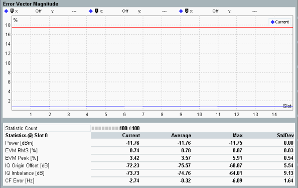

Detailed Views: Modulation
This section applies to the following detailed views:
- Error vector magnitude (multislot and vs chip)
- Magnitude error (multislot and vs chip)
- Phase error (multislot and vs chip)
- Frequency error
Each of the detailed views shows a diagram and a statistical overview of one-slot results.

WCDMA NodeB multi-evaluation: EVM
- Error vector magnitude, magnitude error, phase error and frequency error
The diagrams cover a time interval of 15 slots. The "Current" traces contain one measurement result per slot. The result is calculated as the average of the measured quantity of all samples in the slot, excluding a 25 μs guard period at the beginning and end. - Error vector magnitude vs chip, magnitude error vs chip, and phase error vs chip
The diagrams cover all 2560 chips of the "Preselected Slot" and contain one measurement result per chip.
For additional description of statistical results, refer to "Detailed Views: TX Measurement".
For additional information, refer to "Common View Elements".